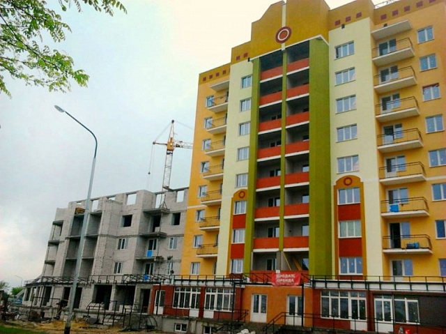

На Рівненщині будують енергоефективну багатоповерхівку, де рахунки за тепло будуть на 30% нижчими
У Кузнецовську (Рівненська область) будують енергоефективну багатоповерхівку, де рахунки за тепло будуть меншими на 20-30%.
Як зазначає голова обслуговуючого кооперативу "ЖБК "Енергетик" Олег Берекета, завдяки використанню новітніх енергозберігаючих технологій у розташованому у мікрорайоні Вараш житловому комплексі, четвертий під'їзд якого наразі готується до здачі в експлуатацію, витрати на утримання квартир суттєво зменшуються.
За його словами, цегляний будинок з п'ятикамерними металопластиковими вікнами з двокамерними склопакетами, з утепленими пінопластом та мінеральною плитою завтовшки 12-13 сантиметрів фасадами, високоякісною вапняно-цементною штукатуркою, новою технологією по енергозбереженню та сучасними системами опалення, дозволить власникам квартир зменшити рахунки за тепло не на 5-10%, як при звичайному утепленні, а на 20-30%.
Таку економію, за словами Олега Берекети, забезпечує нова система опалення, яку застосували у нових секціях новобудови, як експеримент для Кузнецовська. Згідно з попередніми підрахунками, протягом опалювального сезону мешканці нових під’їздів втричі економитимуть на споживанні тепла.
Мешканці першої черги житлового комплексу – 1,2,3 під'їзд (105 квартир) – завдяки впровадженню новітніх технологій сплачують за комунальні платежі найменше у місті. Після здачі будинку в експлуатацію забудовник одразу створює ОСББ, яке дозволяє власникам квартир суттєво економити на експлуатації житла та вартості комунальних послуг.
Наразі вартість енергоефективного житла в Кузнецовську становить від 9510 гривень\кв. м. і обумовлена цінами на будівельні матеріали, а також особливостями міста, яке змушене завозити будматеріали із Луцька, Сарн та інших міст розташованих у радіусі 30 кілометрів. Як результат, мінімальна вартість 1- кімнатної квартири площею 39 кв.м. становить - 401 700 гривень.
|